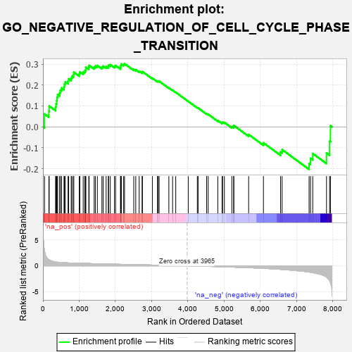
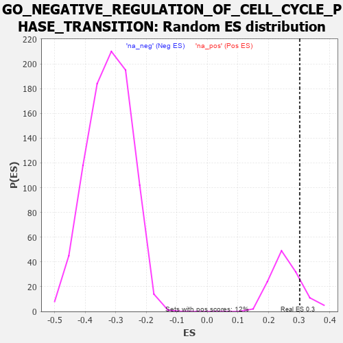

| | | Dataset | 7d |
| Phenotype | NoPhenotypeAvailable |
| Upregulated in class | na_pos |
| GeneSet | GO_NEGATIVE_REGULATION_OF_CELL_CYCLE_PHASE_TRANSITION |
| Enrichment Score (ES) | 0.30193913 |
| Normalized Enrichment Score (NES) | 1.1654173 |
| Nominal p-value | 0.16260162 |
| FDR q-value | 0.52319074 |
| FWER p-Value | 1.0 |
Table: GSEA Results Summary

Fig 1: Enrichment plot: GO_NEGATIVE_REGULATION_OF_CELL_CYCLE_PHASE_TRANSITION
Profile of the Running ES Score & Positions of GeneSet Members on the Rank Ordered List
| PROBE | GENE SYMBOL | GENE_TITLE | RANK IN GENE LIST | RANK METRIC SCORE | RUNNING ES | CORE ENRICHMENT | | 1 | PCBP4 | | | 44 | 2.875 | 0.0614 | Yes |
| 2 | TEX14 | | | 164 | 1.179 | 0.0738 | Yes |
| 3 | BUB3 | | | 172 | 1.143 | 0.0995 | Yes |
| 4 | CNOT7 | | | 348 | 0.750 | 0.0949 | Yes |
| 5 | HUS1 | | | 362 | 0.735 | 0.1103 | Yes |
| 6 | CLSPN | | | 379 | 0.719 | 0.1250 | Yes |
| 7 | BAX | | | 387 | 0.711 | 0.1407 | Yes |
| 8 | NBN | | | 405 | 0.696 | 0.1548 | Yes |
| 9 | CNOT6 | | | 462 | 0.655 | 0.1630 | Yes |
| 10 | CDC20 | | | 480 | 0.644 | 0.1758 | Yes |
| 11 | CNOT2 | | | 514 | 0.625 | 0.1862 | Yes |
| 12 | CCNB1 | | | 581 | 0.601 | 0.1918 | Yes |
| 13 | RBL2 | | | 593 | 0.596 | 0.2043 | Yes |
| 14 | NDC80 | | | 616 | 0.590 | 0.2153 | Yes |
| 15 | MRE11 | | | 693 | 0.560 | 0.2187 | Yes |
| 16 | CDC6 | | | 709 | 0.557 | 0.2298 | Yes |
| 17 | RAD21 | | | 779 | 0.538 | 0.2336 | Yes |
| 18 | BLM | | | 804 | 0.531 | 0.2429 | Yes |
| 19 | RFWD3 | | | 843 | 0.521 | 0.2502 | Yes |
| 20 | RPA2 | | | 851 | 0.519 | 0.2615 | Yes |
| 21 | MEN1 | | | 1003 | 0.483 | 0.2536 | Yes |
| 22 | PSMG2 | | | 1018 | 0.480 | 0.2630 | Yes |
| 23 | RINT1 | | | 1110 | 0.462 | 0.2622 | Yes |
| 24 | PSMD7 | | | 1152 | 0.454 | 0.2676 | Yes |
| 25 | TFDP1 | | | 1180 | 0.450 | 0.2746 | Yes |
| 26 | PSMD2 | | | 1181 | 0.450 | 0.2851 | Yes |
| 27 | CDC73 | | | 1265 | 0.436 | 0.2848 | Yes |
| 28 | CNOT3 | | | 1274 | 0.435 | 0.2939 | Yes |
| 29 | CARM1 | | | 1413 | 0.408 | 0.2859 | Yes |
| 30 | RBX1 | | | 1445 | 0.401 | 0.2913 | Yes |
| 31 | E2F4 | | | 1501 | 0.390 | 0.2934 | Yes |
| 32 | CDK4 | | | 1626 | 0.370 | 0.2864 | Yes |
| 33 | ORC1 | | | 1661 | 0.363 | 0.2905 | Yes |
| 34 | MRNIP | | | 1743 | 0.346 | 0.2883 | Yes |
| 35 | RAD17 | | | 1804 | 0.336 | 0.2885 | Yes |
| 36 | PSMD4 | | | 1811 | 0.335 | 0.2956 | Yes |
| 37 | PSMD6 | | | 1858 | 0.326 | 0.2974 | Yes |
| 38 | ZW10 | | | 1973 | 0.309 | 0.2901 | Yes |
| 39 | FOXO4 | | | 2004 | 0.304 | 0.2934 | Yes |
| 40 | JADE1 | | | 2141 | 0.286 | 0.2828 | Yes |
| 41 | PSME4 | | | 2143 | 0.285 | 0.2893 | Yes |
| 42 | DTL | | | 2154 | 0.284 | 0.2947 | Yes |
| 43 | CNOT4 | | | 2161 | 0.283 | 0.3005 | Yes |
| 44 | CDK2 | | | 2226 | 0.272 | 0.2987 | Yes |
| 45 | PSMF1 | | | 2251 | 0.268 | 0.3019 | Yes |
| 46 | CDT1 | | | 2505 | 0.226 | 0.2751 | No |
| 47 | PSMD5 | | | 2560 | 0.218 | 0.2734 | No |
| 48 | VPS4A | | | 2654 | 0.205 | 0.2664 | No |
| 49 | CUL1 | | | 2735 | 0.193 | 0.2607 | No |
| 50 | TPRA1 | | | 2745 | 0.192 | 0.2641 | No |
| 51 | BRD7 | | | 3018 | 0.147 | 0.2330 | No |
| 52 | FOXN3 | | | 3159 | 0.129 | 0.2183 | No |
| 53 | PSMD9 | | | 3179 | 0.125 | 0.2188 | No |
| 54 | FZR1 | | | 3205 | 0.122 | 0.2185 | No |
| 55 | CNOT1 | | | 3473 | 0.081 | 0.1865 | No |
| 56 | LCMT1 | | | 3576 | 0.063 | 0.1751 | No |
| 57 | SKP1 | | | 3663 | 0.049 | 0.1653 | No |
| 58 | SYF2 | | | 4008 | -0.009 | 0.1219 | No |
| 59 | PCID2 | | | 4258 | -0.051 | 0.0916 | No |
| 60 | PSME3 | | | 4280 | -0.056 | 0.0902 | No |
| 61 | PINX1 | | | 4515 | -0.097 | 0.0628 | No |
| 62 | APC | | | 4558 | -0.107 | 0.0600 | No |
| 63 | TAOK3 | | | 4823 | -0.162 | 0.0303 | No |
| 64 | EP300 | | | 4941 | -0.186 | 0.0198 | No |
| 65 | PRKDC | | | 4955 | -0.189 | 0.0226 | No |
| 66 | KLF4 | | | 5005 | -0.198 | 0.0210 | No |
| 67 | ATM | | | 5210 | -0.249 | 0.0010 | No |
| 68 | PTEN | | | 5262 | -0.261 | 0.0006 | No |
| 69 | CDK1 | | | 5264 | -0.262 | 0.0066 | No |
| 70 | PSMD1 | | | 5674 | -0.367 | -0.0367 | No |
| 71 | PLK1 | | | 6082 | -0.500 | -0.0766 | No |
| 72 | MIIP | | | 6554 | -0.686 | -0.1203 | No |
| 73 | TPR | | | 6597 | -0.709 | -0.1091 | No |
| 74 | OVOL1 | | | 7341 | -1.214 | -0.1749 | No |
| 75 | FBXL7 | | | 7380 | -1.245 | -0.1507 | No |
| 76 | CASP2 | | | 7442 | -1.322 | -0.1277 | No |
| 77 | PKD2 | | | 7822 | -2.167 | -0.1252 | No |
| 78 | PSMD3 | | | 7907 | -2.887 | -0.0686 | No |
| 79 | PSMD8 | | | 7931 | -3.286 | 0.0051 | No |
Table: GSEA details [plain text format]

Fig 2: GO_NEGATIVE_REGULATION_OF_CELL_CYCLE_PHASE_TRANSITION: Random ES distribution
Gene set null distribution of ES for GO_NEGATIVE_REGULATION_OF_CELL_CYCLE_PHASE_TRANSITION